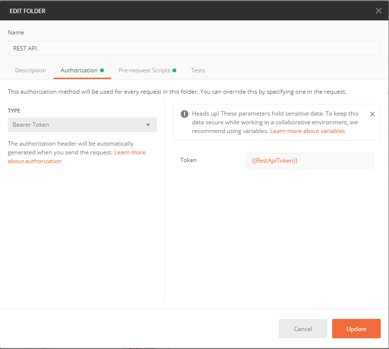
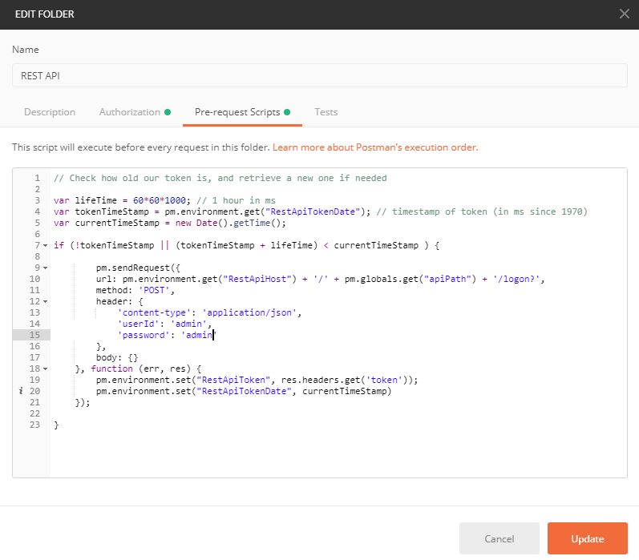

Postman scripting
One of the tools I use daily when developing our REST API is Postman. If you've not used Postman before, it's billed as an "API Development Environment", essentially allowing you to send HTTP requests from a flexible and clear GUI, while organising and saving them, and testing the responses received.
On top of the nice presentation Postman also has some features that elevate it beyond what you can do with a basic curl command, in particular the scripting functionality.
Our REST API requires a bearer token for most paths; if a request doesn't include this as a header then it'll return a 401 unauthorised response. With postman scripting you can automate the process of logging in:
The first step is to set a collection to use a bearer token. This way every request in that collection will automatically get a header added with the key "Authorization" and the value "Bearer {token}", where {token} is set to the value of the variable RestApiToken.

Next, we need to set up a pre-request script, so that before any request in a collection, make sure we have a token:
var lifeTime = 60*60*1000; // 1 hour in ms
var tokenTimeStamp = pm.environment.get("RestApiTokenDate"); // timestamp of token (in ms since 1970)
var currentTimeStamp = new Date().getTime();
if (!tokenTimeStamp || (tokenTimeStamp + lifeTime) < currentTimeStamp ) {
pm.sendRequest({
url: pm.environment.get("RestApiHost") + '/' + pm.globals.get("apiPath") + '/logon?',
method: 'POST',
header: {
'content-type': 'application/json',
'userId': 'admin',
'password': 'admin'
},
body: {}
}, function (err, res) {
pm.environment.set("RestApiToken", res.headers.get('token'));
pm.environment.set("RestApiTokenDate", currentTimeStamp)
});
}

This is a fairly straightforward script, but there are a few things to note:
- Here we've got the request hardcoded into the script, not necessarily ideal but the admin/admin user exists within our test system only and as default credentials that are useful for testing purposes. You could replace these with further variables as required.
- This script also stores an extra variable to track the age of the token: this way we can avoid generating a new token for each request. In our environment they last for an hour, and so we just make sure our token is less than one hour old.
- We store the token and token date as environment variables - this way postman will track each separately between each environment, if you have more than one configured (such dev vs test). A JWT wouldn't usually be reusable between different environments.
Of course, you can do all of this with python, bash, or powershell, if you prefer avoiding to use another tool, but Postman is easy to get up and gives you a really simple, clean workflow for common tasks along with a nice presentation of your saved requests.